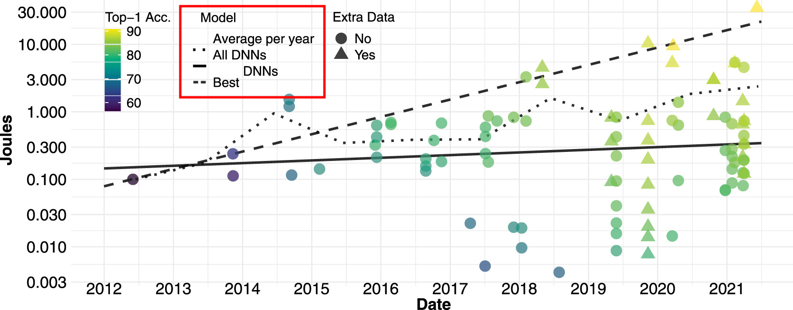
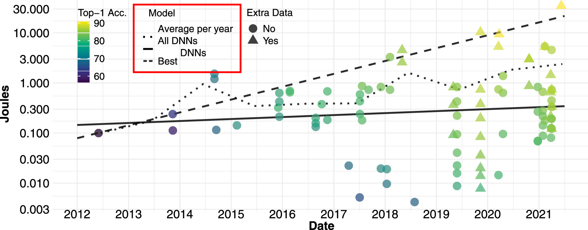

Introduction
üëÅÔ∏è‚Äçüó®Ô∏è Vision Artificielle
üìñ Extraire automatiquement des informations √† partir de donn√©es visuelles

- Applications nombreuses : médical, industriel, sécurité, robotique, ...
- Comment ? Réseaux de Neurones Artificiels ( ANNs ) par l'apprentissage profond
üîã Consommation √ânerg√©tique
Estimation d'énergie consommée lors d'une inférence des modèles de l'état de l'art par année[Desislavov2023]

 

üîã Consommation √ânerg√©tique
- Évolution des modèles
- Complexité (profondeur, paramètres, ...)
- Puissance de calculs requise
- Consommation énergétique
- Enjeux majeurs
- Environnement
- Applications
➡️ Problématique principale
üíª Technologie Neuromorphique
üìñ Technologie inspir√©e par le fonctionnement des neurones biologiques.
- üì∑ Capteur : Cam√©ra √©v√©nementielle
- ü߆ Traitement : R√©seaux de neurones impulsionnels (SNN)
- Systèmes de vision économes en énergie
➡️ Solution prometteuse
üì∑ Cam√©ra √âv√©nementielle
- Inspirée de la biologie
- Événements asynchrones lors d'un changement d'intensité du pixel
- ➡️ Mouvement
ü߆ R√©seaux de Neurones Impulsionnels
- Bio-inspirés (neurones impulsionnels)
- Neurones communiquent par impulsions asynchrones
Vision Neuromorphique
- üìñ m√©thode int√©grant une cam√©ra √©v√©nementielle et/ou un SNN
- ü§ù Traitement asynchrone en commun
⛰️ Défis du neuromorphique
- Par rapport aux méthodes conventionnelles
- Domaine moins étudié
- Technologies moins matures
- ➡️ Performances et complexité des approches neuromorphiques moins avancées
- Besoins du domaine
- Développement de nouvelles approches en vision neuromorphique
- Analyses approfondies pour leur compréhension
üéØ Objectifs
Progrès des technologies neuromorphiques dans les tâches de vision artificielle
- Conception de modèles d'apprentissage profond avec SNNs et/ou caméras événementielles
- Études expérimentales pour approfondir nos connaissances
Contextes
üóÉÔ∏è Organisation
- État de l'art
- Dévéloppement et analyse de SNNs profonds pour la localisation d'objet
- Pré-entraînement par apprentissage auto-supervisé pour les événements
- Conclusion
État de l'Art
Trois Domaines
- üë¥ Approches classiques : ANN + images
- ⚡ Réseaux de neurones impulsionnels
- üì∏ Vision √©v√©nementielle : vision artificielle avec des cam√©ras √©v√©nementielles
üë¥ Approches Classiques
üë¥ Approches Classiques
Évolutions
üóíÔ∏è Formulations
üóíÔ∏è Formulations
⚡ Réseaux de Neurones Impulsionnels
Explication du neurone impulsionnel (vs ANN)
⚡ Réseaux de Neurones Impulsionnels
Modèle IF & LIF
⚡ Réseaux de Neurones Impulsionnels
Codage neuronal
⚡ Réseaux de Neurones Impulsionnels
Techniques d'apprentissage
⚡ Réseaux de Neurones Impulsionnels
Surrogate gradient
⚡ Réseaux de Neurones Impulsionnels
Matériel Neuromorphique
⚡ Réseaux de Neurones Impulsionnels
Verrous Scientifiques
üì∏ Vision √âv√©nementielle
Caméra
üì∏ Vision √âv√©nementielle
Avantages
üì∏ Vision √âv√©nementielle
Évolution caméras + changement paradigme
üì∏ Vision √âv√©nementielle
Formulation génération événements
üì∏ Vision √âv√©nementielle
Représentation événements
- Images événementielles (détails)
- Surfaces temporelles
- Voxels
- Graphes
- Entraînable
- Traitement direct
üì∏ Vision √âv√©nementielle
Contribution Bina-Rep
üì∏ Vision √âv√©nementielle
Tâches de vision
üì∏ Vision √âv√©nementielle
Bases de données (différentiations)
üì∏ Vision √âv√©nementielle
Verrous scientifiques
üóíÔ∏è Bilan
Introduire les problèmes qu'on traite et basta-zer
SNNs pour la Localisation d'Objet
Pourquoi ?
Preuve de Concept Préliminaire
Parler brièvement de DECOLLE
Contexte de l'Étude
- Dévelo
Formulation - Localisation d'Objet
Métrique d'Évaluation
Configuration - Latence Temporelle
Expliquer comment on fait
Modèle SNN
Modèle ANN
Images Statiques - Base de Données
Images Statiques - Codages Neuronaux
Images Statiques - Codages Neuronaux
Images Statiques - Latence Temporelle
Images Statiques - Corruptions
Baisse de Précision Relative
Images Statiques - Corruptions
Événements - Bases de Données
Événements - Latence Temporelle
Événements - Latence Temporelle
Événements - Corruptions
Détailler les corruptions
Événements - Corruptions
Résultats
Consommation Énergétique
Consommation Énergétique
Conclusion de l'Étude
Spiking-Fer
Pré-entraînement Auto-supervisé
pour la
Vision Événementielle
Contexte
Solutions Existantes
- Pré-entraînement Supervisé
- Apprentissage Auto-supervisé
Méthode - Aperçu
Méthode - Formulation d'une EDA
Méthode - Architecture d'Encodage Conjoint
Méthode - Encodeurs Étudiés
Méthode - Variantes
Étude sur les EDAs
EDAs Étudiées
Évaluation des Performances
Protocole #1️⃣ - Évaluation Linéaire
Protocole #2️⃣ - Apprentissage Semi-supervisé
Protocole 3️⃣ - Transfert d'Apprentissage
Étude sur les EDAs
Étude sur les EDAs
Résultats
Résultat des Évaluations
Mise en Perspective
Analyses des Représentations
Représentation - Uniformité et Tolérance
Expliquer ce que c'est
Représentation - Uniformité et Tolérance
Expliquer
Thank you!
References
- [NameYEAR]: M. Sajjad, et al. "A comprehensive survey on deep facial expression recognition: challenges, applications, and future guidelines"
- [Bokovoy2019]: A. Bokovoy et al. "Real-time Vision-based Depth Reconstruction with NVidia Jetson"
- [Desislavov2023]: R. Desislavov et al. "Trends in AI inference energy consumption: Beyond the performance-vs-parameter laws of deep learning"